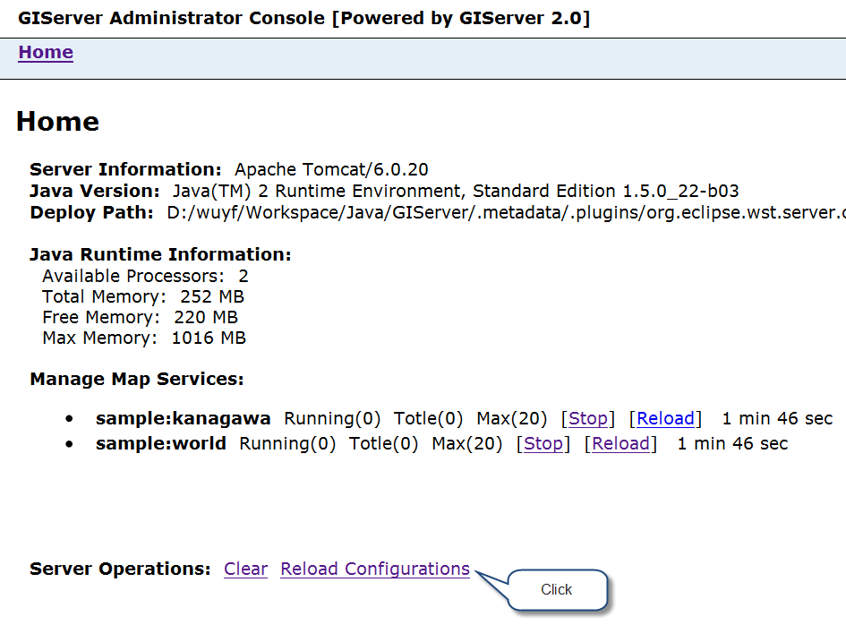
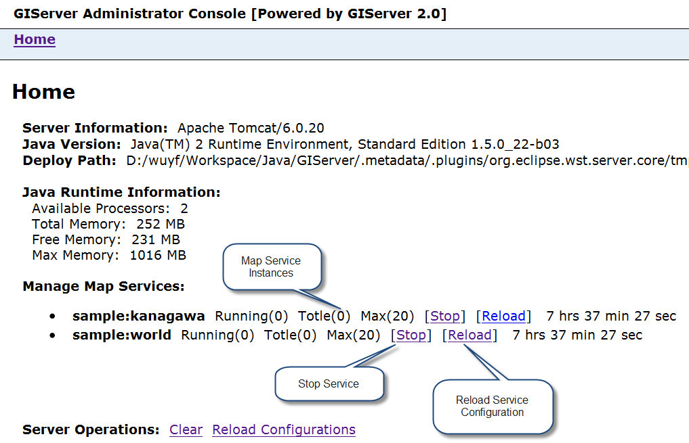

|
Admin. console can be visited by URL like "http://localhost:8777/giserver/rest/admin/",
we can manage GIServer using it.
- Login
- Using admin. console need administrator accounts, they are stored in file "WEB-INF/classes/config/administrator.properties",
there may be a default account "admin/giserver", change the password or delete the user as soon as possible.
- Manage Server
- We can load modified server parameters and services without rebooting server by click "Reload configuration".
- 
- Map Service Informations and Managment
- We can start, stop, reload map services in admin. console.
- 
|
|